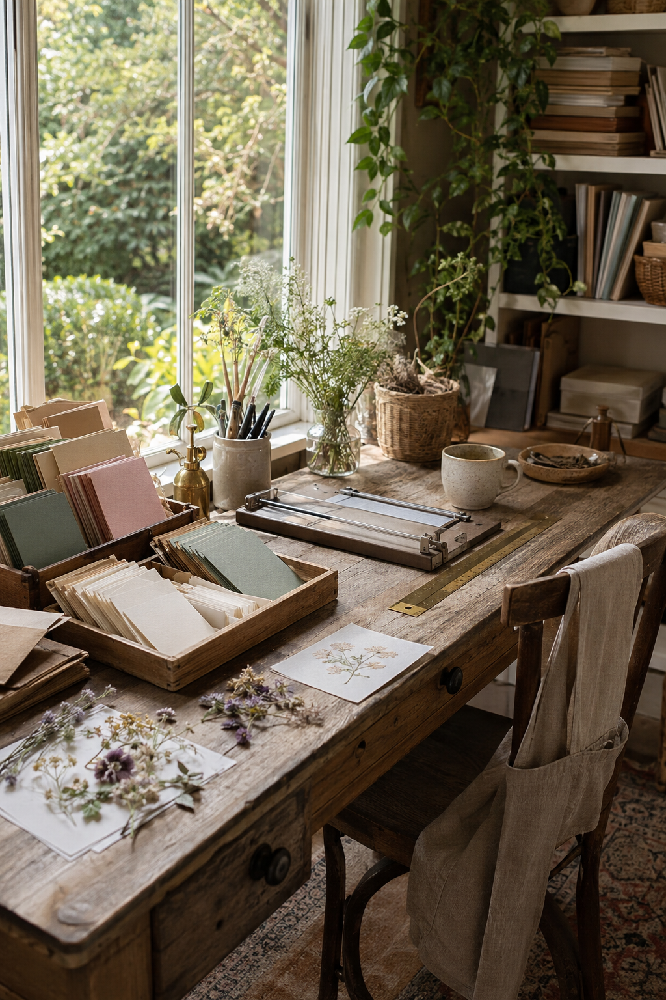
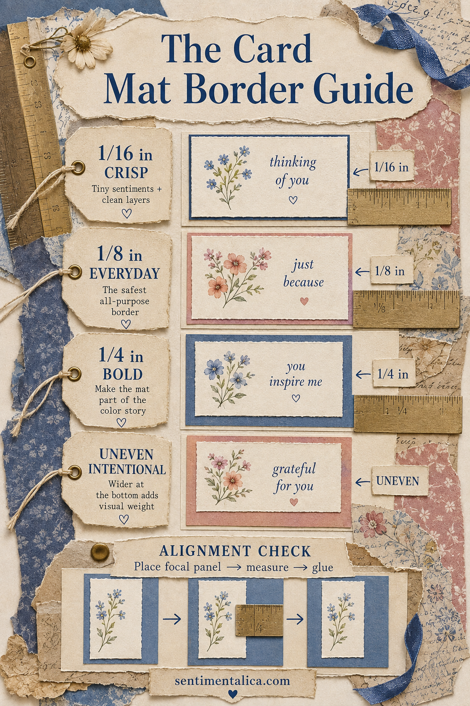
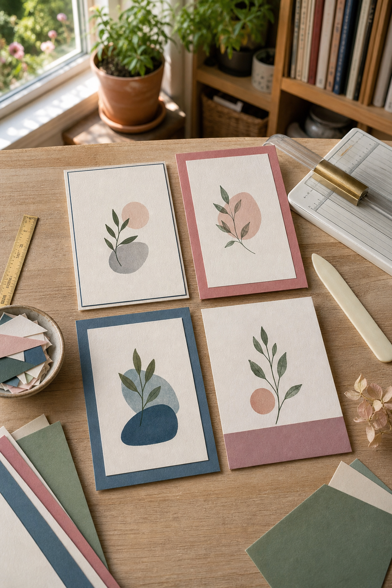

A paper mat is the colored layer behind a card’s focal panel. It sounds like a tiny decision, yet the width of that border changes the whole mood: delicate, classic, bold, or quietly formal.
The easiest way to get cleaner card layers is to choose the effect first, then cut. Do not keep trimming all four sides in search of accidental symmetry. Decide which border you want and let the measurement do the work.

Start with the finished focal panel
Trim and decorate the focal panel before calculating the mat. Paper can shift slightly after stamping, painting, or tearing, so early measurements are often wrong by the final assembly.
For an even border, add twice the desired border width to both dimensions. A 3 × 4 inch focal panel with a 1/8 inch border needs a 3 1/4 × 4 1/4 inch mat.
Use 1/16 inch for a crisp edge
This narrow border acts almost like an outline. It suits tiny sentiments, line drawings, and cards with several nested layers. It also exposes cutting errors quickly, so use a sharp blade and square trimmer.
If your paper is fibrous or deckled, choose a wider border. A precise 1/16 inch frame beside an irregular edge can look unintentionally uneven.
Use 1/8 inch as the everyday border
This is the forgiving all-purpose choice. It gives the focal panel definition without asking the mat color to become part of the design. Start here when you are unsure, especially with botanical prints, photographs, and medium-sized sentiments.

Use 1/4 inch when color should speak
A bold border is not merely a frame; it becomes a color block. Pull its color from a small detail in the focal image, not necessarily the largest area. A slate-blue mat can echo one painted flower and make the whole card feel more composed.
Bold borders need breathing room. If the card base is also strongly colored, separate them with a slim cream layer rather than stacking two heavy colors directly together.
Let the bottom border carry weight
An uneven border can be intentional. Center the focal panel left to right, keep the top and side margins modest, and leave the bottom 3–6 mm deeper. The extra paper beneath the image gives it visual weight, much like a gallery mount.
This works especially well with tall botanical panels and small sentiments. It looks less successful when the image already has a heavy dark area at the bottom.

Align first, measure second, glue last
Place the focal panel loosely on the uncut mat paper. Move it until the visual weight feels balanced, make two tiny pencil marks, then measure. This order is useful when the artwork is not optically centered, even if the paper rectangle is.
Apply adhesive in the middle first, lower the panel, then press outward. Liquid glue gives a few seconds of adjustment; tape runner is immediate. If perfect alignment makes you tense, use liquid adhesive sparingly and keep a clean cloth nearby.
Cut three small mat samples in your favorite colors and label the backs 1/16, 1/8, and 1/4 inch. Holding these beside a new focal panel is faster than guessing. Soon the border will become a design choice rather than a rescue operation.
Browse more calm paper-craft tutorials in the Sentimentalica journal.